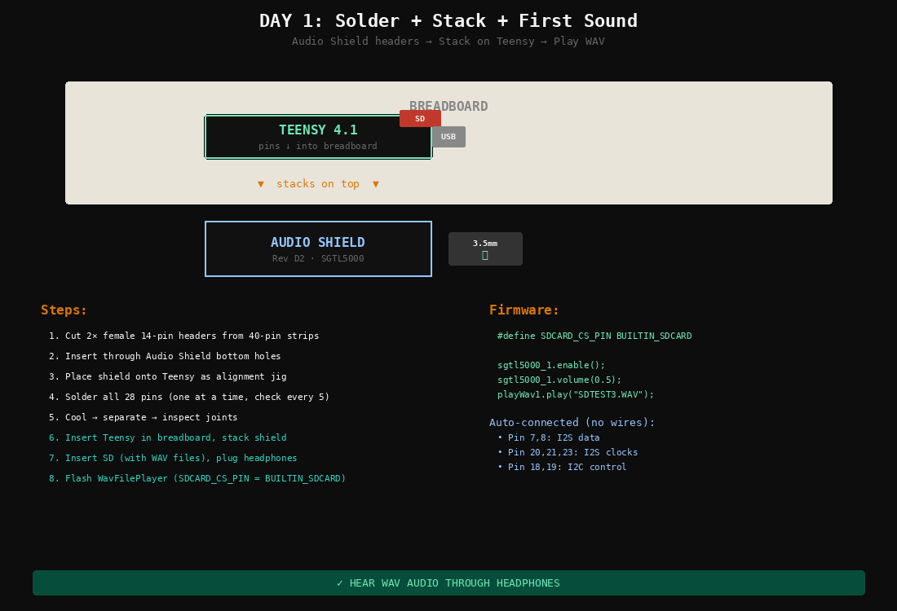
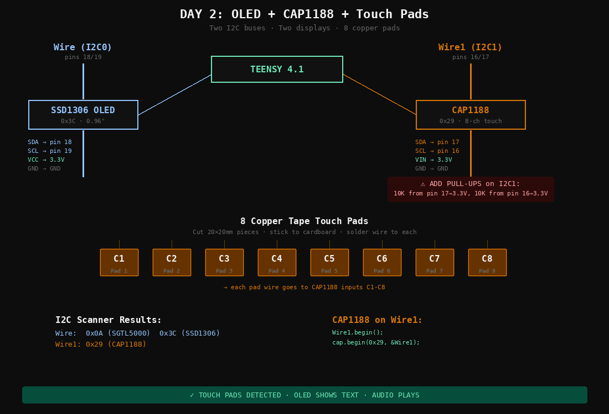
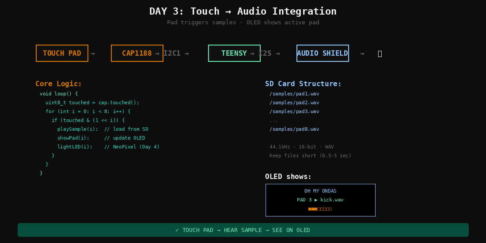
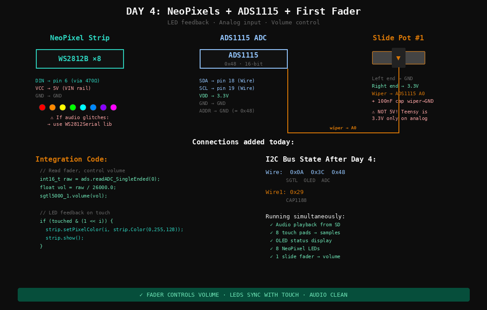
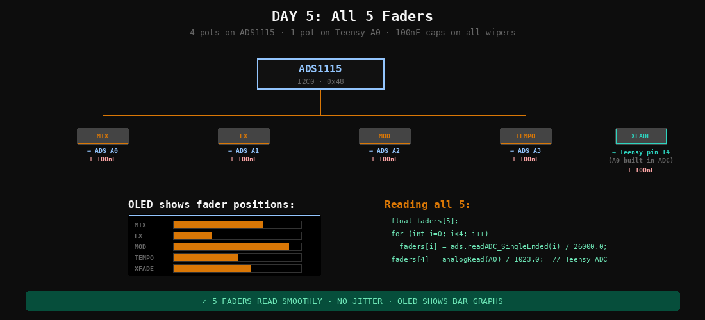
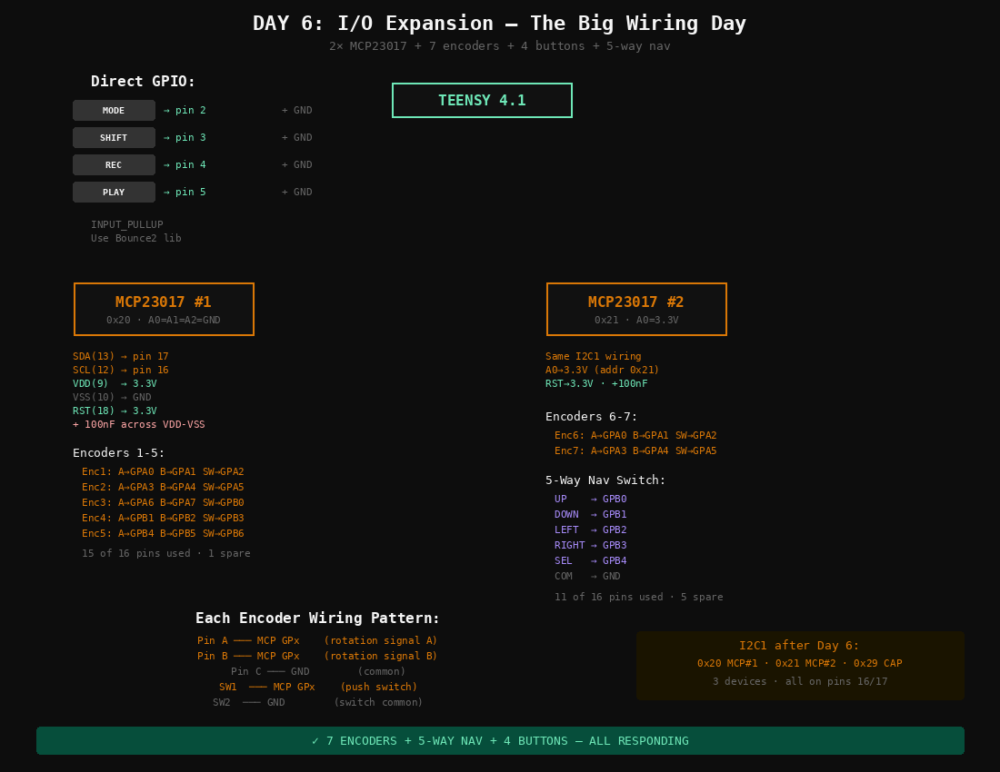
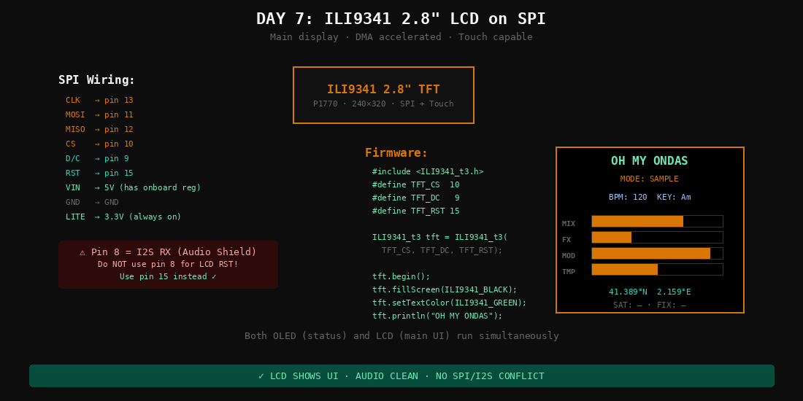
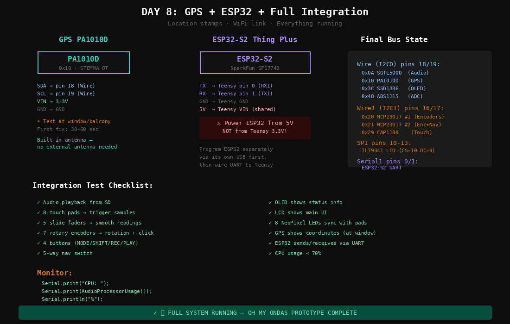

Assembly Manual
Oh My Ondas Hardware Prototype — March 2026 — Barcelona

TEENSY 4.1 — COMPLETE PIN ASSIGNMENT — Pins 7, 8, 20, 21, 23 RESERVED by Audio Shield I2S
Before You Start
Confirm these counts. If anything is short, note it before beginning.
- Slide pots 45mm (P4272): ordered 5 — confirm you have 5
- Wire Kit 22AWG (P3174): check Adafruit box
- Helping Third Hand (P291): check Adafruit box
Key Decisions
- Use Teensy built-in SD (SanDisk Ultra 32GB). Audio Shield SD slot unused.
- LCD is 2.8″ ILI9341 (P1770) — DMA-optimized ILI9341_t3 library.
- Dual I2C: Wire (18/19) audio-path, Wire1 (16/17) UI-polling.
- 4 main buttons direct to Teensy pins for latency + interrupts.
- ESP32-S2 powered from 5V, not Teensy 3.3V.
Tools
Soldering station 48W, solder 1mm, flux, 2× breadboard, jumper wires, helping hand, micro-USB cable, 3.5mm headphones.
The Audio Shield Rev D2 stacks directly on top of the Teensy 4.1 via two rows of female headers. You need 2 × 14-pin female headers (cut from a 40-pin strip).
- Cut headers: Count 14 pins on the strip and cut with flush cutters. You need two 14-pin pieces. Cut on the 15th socket to avoid cracking pin 14.
- Insert headers into Teensy: Push the two 14-pin female headers onto the Teensy's outer male pin rows (the two long rows of pins along each edge). The headers sit on top of the Teensy, sockets facing up.
- Stack the Audio Shield on top: Place the Audio Shield board onto the headers so the shield's through-holes line up with all 28 header pins. The Audio Shield's 3.5mm jack should face the same end as the Teensy's USB port. The Teensy is your alignment jig — stacking before soldering guarantees all pins are straight and spaced correctly.
- Solder from the TOP of the Audio Shield: Flip the stack so the Audio Shield PCB is on the bottom. The header pins now poke through the Audio Shield's top surface. Solder each pin where it comes through the Audio Shield PCB. Do NOT solder anything to the Teensy itself.
- Technique: Heat the pad and pin together for 2 seconds, feed solder until it flows around the pin and wets the pad. Move to the next pin. Do corners first to lock alignment, then fill in the rest.
- Separate: After all 28 joints cool, gently pull the Audio Shield off the Teensy. Inspect every joint — look for bridges between adjacent pins and cold joints (dull/blobby). Reflow any bad joints.
pjrc.com/store/teensy3_audio.html.- Format as FAT32 (not exFAT).
- Copy PJRC test WAV files to root.
- Insert into Teensy built-in slot (not Audio Shield slot).
- Teensy into breadboard (spans center gap).
- Audio Shield on top via headers.
- Headphones into Audio Shield 3.5mm jack.
- USB to computer.
#define SDCARD_CS_PIN BUILTIN_SDCARD
// DO NOT use pins 10/7/14 for SD
// Those are Audio Shield SD (unused)Open WavFilePlayer example. Set CS pin as above. Upload. Serial Monitor 9600 baud.
| CAP1188 Pin | Teensy Pin | Notes |
|---|---|---|
| SDA | 17 (SDA1) | Wire1 bus |
| SCL | 16 (SCL1) | Wire1 bus |
| VIN | 3.3V | |
| GND | GND |
Cut 8 pieces of copper tape (~20×20mm). Stick on cardboard in 2×4 grid, 5mm spacing. Solder wire to each. Connect to C1–C8.
Wire1.begin();
Adafruit_CAP1188 cap = Adafruit_CAP1188();
cap.begin(0x29, &Wire1); // I2C1 at 0x29Serial Monitor: touch each pad → see event. Then integrate: pad N triggers sample N via AudioPlaySdWav.
| OLED Pin | Teensy Pin | Bus |
|---|---|---|
| SDA | 18 (SDA0) | Wire — shared with Audio Shield |
| SCL | 19 (SCL0) | Wire |
| VCC | 3.3V | |
| GND | GND |
I2C scan on Wire should show: 0x0A (SGTL5000) + 0x3C (SSD1306).
| LCD Pin | Teensy Pin | Notes |
|---|---|---|
| CLK | 13 (SCK) | SPI clock |
| MOSI | 11 | SPI data out |
| MISO | 12 | SPI data in |
| CS | 10 | Chip select |
| DC | 9 | Data/Command |
| RST | 15 | Reset (NOT pin 8!) |
| LITE | 3.3V | Backlight always on |
Data → pin 6 via 470Ω series resistor. VCC → 5V. GND → GND.
| ADS1115 Pin | Teensy Pin | Notes |
|---|---|---|
| SDA | 18 (SDA0) | Shared I2C0 bus |
| SCL | 19 (SCL0) | |
| VDD | 3.3V | |
| GND | GND | |
| ADDR | GND | Sets address to 0x48 |
Each pot: Left → GND, Right → 3.3V, Wiper → ADS1115 A0–A3. Pot 5 wiper → Teensy pin 14 (A0).
Add 100nF ceramic cap from each wiper to GND, close to the ADC input.
Adafruit_ADS1115 ads;
ads.begin(0x48, &Wire);
// ads.readADC_SingleEnded(0) ... sweep 0 to ~26000If jumpy: check 100nF caps, keep wiper wires away from SPI lines.
| Button | Teensy Pin | Wiring |
|---|---|---|
| MODE | 2 | Button between pin and GND, INPUT_PULLUP |
| SHIFT | 3 | Same |
| REC | 4 | Same |
| PLAY | 5 | Same — Pressed=LOW, Released=HIGH |
Watch the notch — pin 1 at the notch end. Both on I2C1 (16/17). #1 at 0x20 (A0/A1/A2 = GND). #2 at 0x21 (A0 = 3.3V). RESET pins → 3.3V. 100nF cap on each VDD–VSS.
Each EC11: C (common) → GND, A + B → MCP GPIO, SW → MCP GPIO. Enable MCP internal pull-ups in firmware. 5 encoders on MCP#1, 2 on MCP#2.
Common → GND. Up/Down/Left/Right/Select → MCP#2 GPIOs. Internal pull-ups.
| PA1010D Pin | Teensy Pin | Notes |
|---|---|---|
| SDA | 18 (SDA0) | Shared I2C0 |
| SCL | 19 (SCL0) | |
| VIN | 3.3V | |
| GND | GND |
Adafruit_GPS GPS(&Wire);
GPS.begin(0x10);
GPS.sendCommand(PMTK_SET_NMEA_OUTPUT_RMCGGA);
GPS.sendCommand(PMTK_SET_NMEA_UPDATE_1HZ);Flash WiFi test via its own USB port before wiring to Teensy. Verify it connects to your network.
| ESP32 Pin | Teensy Pin | Notes |
|---|---|---|
| TX | 0 (RX1) | ESP32 sends → Teensy receives |
| RX | 1 (TX1) | Teensy sends → ESP32 receives |
| 5V / VBUS | VIN | Shared 5V from USB |
| GND | GND |
// Teensy:
Serial1.begin(115200);
if (Serial1.available()) {
String msg = Serial1.readStringUntil('\n');
Serial.print("From ESP32: ");
Serial.println(msg);
}
I2C BUS ARCHITECTURE — Wire (audio-path) and Wire1 (UI-polling, external pull-ups required)

POWER DISTRIBUTION — USB 5V → Teensy LDO 3.3V (~60mA external) + ESP32-S2 (own regulator)
Bus Map — Final State
Wire — I2C0
Wire1 — I2C1
SPI
Audio Shield SD NOT used — Teensy SDIO instead
UART — Serial1
Next Diotronic Visit
- 2.2KΩ resistors ×4 — replace 10K I2C1 pull-ups with proper values
- 1KΩ resistors ×5 — RC filter series resistors for slide pots
- 470Ω resistor ×1 — NeoPixel data line (check your assortment first)
- EC11 rotary encoders ×6 — complete the 13-encoder interface
Parts Set Aside
- KB2040 (P5302) — RP2040 keyboard MCU
- RFM95W LoRa (P3072) — 900MHz radio, future device-to-device
- USB-C Plug + Vertical Port (P5978, P5993) — enclosure phase
- Backup Teensy 4.1 + Audio Shield — in the drawer
Before Day 1 — 15 min, do tonight
- Format SD card as FAT32 on your computer
- Download PJRC test WAV files from pjrc.com → copy to SD root
- Install Arduino IDE + Teensyduino (or PlatformIO)
- Install libraries:
Adafruit_CAP1188,Adafruit_SSD1306,Adafruit_GPS,Adafruit_ADS1X15,Adafruit_MCP23017,ILI9341_t3,Adafruit_NeoPixel,Bounce2 - Confirm you have a data-capable micro-USB cable

DAY 1 — AUDIO SHIELD STACK + SD CARD + HEADPHONES
| Min | Task |
|---|---|
| 0–5 | Set up soldering station. Tin tip. Open flux. |
| 5–10 | Cut 2× female 14-pin headers from 40-pin strips. |
| 10–15 | Insert female headers through Audio Shield bottom holes. |
| 15–20 | Place Audio Shield onto Teensy (use Teensy as alignment jig). |
| 20–40 | Solder all 28 pins. One at a time, check alignment every 5 pins. |
| 40–42 | Cool. Separate. Inspect joints for bridges or cold solder. |
| 42–45 | Insert Teensy into breadboard. Insert SD card into built-in slot. |
| 45–47 | Stack Audio Shield on Teensy. Plug headphones. Connect USB. |
| 47–52 | Open WavFilePlayer example. Set SDCARD_CS_PIN to BUILTIN_SDCARD. Upload. |
| 52–57 | Listen. WAV files should play through headphones. |
| 57–60 | If no sound: check Serial Monitor, SD format, headphone jack. |

DAY 2 — OLED ON WIRE + CAP1188 ON WIRE1 WITH 10K PULL-UPS
| Min | Task |
|---|---|
| 0–3 | Solder 4-pin header onto OLED module. |
| 3–8 | Wire OLED: SDA→pin 18, SCL→pin 19, VCC→3.3V, GND→GND. |
| 8–12 | Flash I2C scanner. Should see 0x0A (SGTL5000) + 0x3C (OLED). |
| 12–15 | Flash SSD1306 example. Display shows Adafruit splash. |
| 15–18 | Solder headers onto CAP1188 breakout (if not pre-soldered). |
| 18–23 | Wire CAP1188: SDA→pin 17, SCL→pin 16, VIN→3.3V, GND→GND. |
| 23–26 | Add 10K pull-up resistors: pin 17→3.3V, pin 16→3.3V. |
| 26–28 | Flash I2C scanner on Wire1. Should see 0x29. |
| 28–45 | Cut 8 copper tape pads (20×20mm). Stick to cardboard. Solder wire to each. Connect to C1–C8. |
| 45–55 | Flash CAP1188 test (use Wire1). Touch each pad → Serial shows events. |
| 55–60 | Test: audio plays while touching pads. Both I2C buses independent. |

DAY 3 — CAP1188 EVENTS DRIVE AUDIO LIBRARY SAMPLE PLAYBACK
| Min | Task |
|---|---|
| 0–10 | Create 8 short WAV samples (or rename PJRC test files to pad1.wav–pad8.wav). Copy to SD /samples/. |
| 10–30 | Write combined sketch: read CAP1188 on Wire1, when pad N touched → play /samples/padN.wav via Audio Library. |
| 30–40 | Flash and test. Touch pad 1 → hear sample 1, pad 2 → sample 2, etc. |
| 40–50 | Add OLED feedback: show which pad was touched and filename. |
| 50–55 | Test simultaneous touches, retrigger behavior. |
| 55–60 | Polish: add debounce, show active pad as highlight on OLED. |

DAY 4 — WS2812B ON PIN 6 + ADS1115 ON I2C0 + FIRST SLIDE POT
| Min | Task |
|---|---|
| 0–5 | Wire NeoPixel strip: DIN→pin 6 (via 470Ω resistor), VCC→5V, GND→GND. |
| 5–10 | Flash NeoPixel strandtest. 8 LEDs cycle colors. |
| 10–13 | Test with audio. If glitches → switch to WS2812Serial library later. |
| 13–18 | Solder headers onto ADS1115 breakout. Insert into breadboard. |
| 18–23 | Wire ADS1115: SDA→pin 18, SCL→pin 19, VDD→3.3V, GND→GND, ADDR→GND. |
| 23–28 | Wire first slide pot: left→GND, right→3.3V, wiper→ADS1115 A0. Add 100nF cap wiper→GND. |
| 28–35 | Flash ADS1115 example. Move fader → values sweep 0–26000. Check for jitter. |
| 35–45 | Integrate: fader controls volume. NeoPixels light on touch. |
| 45–55 | Combined test: touch pad → sample plays + LED lights + fader controls volume. |
| 55–60 | I2C scanner on Wire: 0x0A, 0x3C, 0x48 — three devices confirmed. |

DAY 5 — 4 POTS ON ADS1115 + 1 POT ON TEENSY PIN 14
| Min | Task |
|---|---|
| 0–15 | Wire pots 2–4 to ADS1115 A1, A2, A3. Same pattern each: ends to 3.3V/GND, wiper to input, 100nF cap. |
| 15–20 | Wire pot 5 to Teensy pin 14 (A0) — built-in ADC. Add 100nF cap. |
| 20–30 | Update firmware: read all 5 pots. Print values to Serial. Move each fader independently. |
| 30–40 | Assign functions: pot 1=volume, pot 2=FX mix, pot 3=mod depth, pot 4=tempo, pot 5=crossfade. |
| 40–50 | Update OLED: show 5 fader positions as bar graphs. |
| 50–60 | Full test: 5 faders + 8 pads + audio + OLED + NeoPixels all running. |

DAY 6 — BIGGEST WIRING DAY: 4 DIRECT BUTTONS + 2 MCP23017 + 7 ENCODERS + NAV
This is the biggest wiring day. Repetitive but straightforward.
| Min | Task |
|---|---|
| 0–5 | Wire 4 buttons directly to Teensy: MODE→pin 2, SHIFT→pin 3, REC→pin 4, PLAY→pin 5. Each button between pin and GND. Use INPUT_PULLUP in code. |
| 5–10 | Press MCP23017 #1 into DIP socket. Wire: SDA(chip pin 13)→Teensy pin 17, SCL(12)→pin 16, VDD(9)→3.3V, VSS(10)→GND, RST(18)→3.3V, A0/A1/A2→GND. Add 100nF cap. |
| 10–13 | Press MCP23017 #2 into DIP socket. Same wiring but A0→3.3V (address 0x21). |
| 13–15 | Flash I2C scanner on Wire1: should show 0x20, 0x21, 0x29. |
| 15–40 | Wire 7 encoders. Each: A→GPx, B→GPx, C→GND, SW→GPx, SW common→GND. Encoders 1–5 on MCP#1, encoders 6–7 on MCP#2. See diagram for exact pin map. |
| 40–45 | Wire 5-way nav switch to MCP#2: up/down/left/right/select→GPB0–GPB4, common→GND. |
| 45–55 | Flash combined test: all 7 encoders + nav switch + 4 buttons. |
| 55–58 | Put Rainbow Micro Knobs on encoders. Test fit. |
| 58–60 | Verify no I2C errors. Full UI responding. |

DAY 7 — SPI DISPLAY ON PINS 10-13 · AVOID PIN 8 (I2S RX)
| Min | Task |
|---|---|
| 0–5 | Solder headers onto ILI9341 breakout (P1770) if needed. |
| 5–15 | Wire SPI: CLK→pin 13, MOSI→pin 11, MISO→pin 12, CS→pin 10, DC→pin 9, RST→pin 15, VIN→5V, GND→GND, LITE→3.3V. |
| 15–20 | Double check: pin 8 is NOT used for LCD. Pin 8 = I2S RX (Audio Shield). |
| 20–30 | Flash ILI9341_t3 graphicstest. Fast graphics demo on 2.8″ screen. |
| 30–40 | Test with audio playing simultaneously. SPI + I2S = different buses, should be clean. |
| 40–55 | Write a basic UI screen: mode name, fader bars, pad activity, GPS placeholder. |
| 55–60 | Run everything: LCD + OLED + NeoPixels + faders + pads + encoders + audio. |

DAY 8 — PA1010D ON I2C0 + ESP32-S2 UART (5V, NOT 3.3V)
| Min | Task |
|---|---|
| 0–3 | Solder headers onto PA1010D GPS (or use STEMMA QT cable). |
| 3–8 | Wire GPS: SDA→pin 18, SCL→pin 19, VIN→3.3V, GND→GND. |
| 8–12 | Flash Adafruit_GPS I2C example. GPS.begin(0x10). |
| 12–18 | Go to window/balcony. Wait for fix (30–60 sec). Verify Barcelona coordinates. |
| 18–22 | Show GPS on OLED: lat, lon, satellites. |
| 22–25 | Connect ESP32-S2 to computer via its own USB. Flash WiFi connect sketch. Verify it connects. |
| 25–28 | Disconnect ESP32 from computer. |
| 28–33 | Wire ESP32 to Teensy: TX→pin 0, RX→pin 1, GND→GND, 5V→VIN. NOT 3.3V. |
| 33–40 | Flash Teensy with Serial1 receive code. Test: ESP32 sends message → Teensy prints it. |
| 40–50 | Full integration: power on, init all subsystems, test every input/output. |
| 50–55 | Monitor: CPU usage, audio memory, I2C errors. CPU should be <70%. |
| 55–60 | Everything works. Take a photo of the complete breadboard build. |
Summary
| Day | What | Milestone |
|---|---|---|
| 1 | Solder Audio Shield + stack + first sound | Hear audio |
| 2 | OLED on I2C0 + CAP1188 on I2C1 + 8 pads | Touch + display |
| 3 | Code: touch → play sample → OLED feedback | Touch = sound |
| 4 | NeoPixels + ADS1115 + first fader | Light + fader + sound |
| 5 | Remaining 4 slide pots | 5 faders |
| 6 | 2× MCP23017 + 7 encoders + 4 buttons + nav | Full interface |
| 7 | ILI9341 2.8″ LCD on SPI | Main display |
| 8 | GPS + ESP32 UART + integration test | Complete prototype |
8 hours total. One hour per day. No blockers with current hardware.
If You Get Stuck
- No sound (Day 1): SD must be FAT32, files on root, CS =
BUILTIN_SDCARD. - I2C device not found (Day 2+): Check wiring. Wire1 needs external 10K pull-ups.
- Audio glitches with NeoPixels (Day 4): Switch to
WS2812Seriallibrary. - Fader jitter (Day 4–5): Add 100nF caps on wipers. Keep analog wires away from SPI.
- ESP32 causes Teensy reboot (Day 8): Power ESP32 from 5V, not 3.3V.
- GPS no fix (Day 8): Go outdoors or to window. First fix needs sky view.
- Encoder knobs don't fit (Day 6): Check for set screw hole. May need D-shaft adapter.
After Day 8
- Write actual Oh My Ondas firmware (sampling engine, sequencer, effects routing)
- Source 6 more EC11 encoders for full 13-encoder interface
- Pick up 2.2K + 1K + 470Ω resistors from Diotronic
- Design 3D-printed enclosure at FabLab Barcelona
- First field recording walk